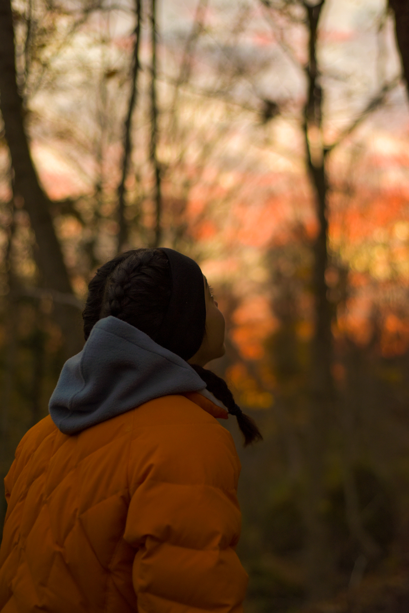

I am a driven and passionate self-taught software developper and rockclimber with endless motivation to learn and the goal of building a career in tech. I am currently pursuing an undergraduate degree in Media Production at Toronto Metropolitan University (formerly known as Ryerson University) in the RTA: School of Media where I am able to develop my skills in all things media: graphic design, video production, photography, writing, and more. Throughout my undergrad, I had many chances to work in the film industry professionally: I assisted on a handful of film sets and edited films/videos. Although these were great experiences, I was simply not feeling excited by the work and did not see myself working in the film industry long-term. Once I came to this conclusion, I set out on a mission to find a career that thrilled me. One that gave me purpose and forced me to stretch myself and grow. That's when I decided to take a deep dive into the world of coding
In the past, when looking at career possibilities, coding never crossed my mind. Math was a struggle back in high school and I deduced that my brain just wasn't made to study technical subjects or think logically. I had also been told all my life that any kind of software-related job was only for the math wizzes and brainiacs. Later in life, I adopted the growth mindset (and learned even more about its power through reading Mindset by Carol S. Dweck). I learned that thinking logically (or programatically) and problem-solving is a learned skill that takes lots and lots of practice to master, and I was determined to learn the skills needed to become a software developper.
This shift towards the growth mindset also happened when I found and fell in love with rockclimbing in 2017. At the time, I was not aware of the term 'growth mindset', yet subconsciously, I was beginning to harness the power of believing in one's ability to grow. It was my first time training and seeing progress in such a measurable and tangible way which fascinated me. I wanted to see how far I could take the sport. For a number of years, I was solely focused on outdoor climbing and I was proud to have achieved a handful of double digit boulders including two First Female Ascents only a few years into my climbing journey. More recently, I have shifted my focus towards competition climbing and have set a goal of making finals at Canadian Nationals in November of 2023.
